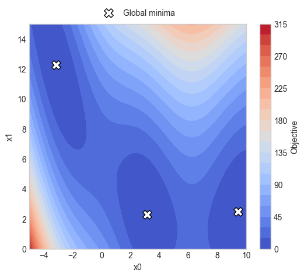
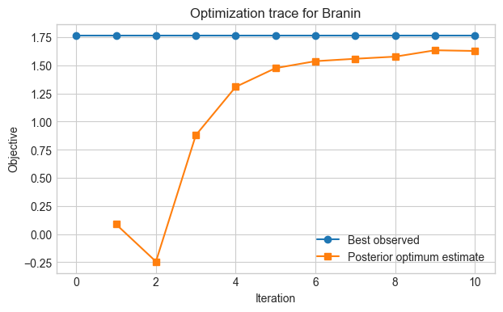
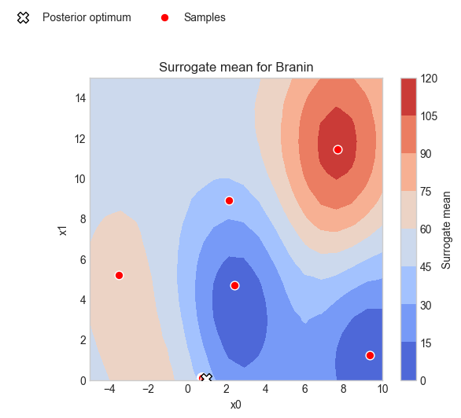

Bayesian Optimization with AFL Pipelines#
This tutorial shows an end-to-end Bayesian optimization campaign that stays native to the AFL pipeline API while using the BoTorch-backed BoTorchRegressor and BoTorchAcquisition ops.
Each optimization round runs the same AFL Pipeline on the current xarray.Dataset, reads the recommended next sample from the pipeline outputs, evaluates a BoTorch standard test function, and appends the new observation back into the dataset.
The notebook is written for low-dimensional synthetic objectives from botorch.test_functions.synthetic, such as Branin, Ackley, and Hartmann.
1. Set Up the Environment#
Import the libraries used for the optimization campaign, configure plotting, and set a reproducible random seed.
[1]:
# Uncomment this cell if you need to install AFL-agent with BoTorch support.
# !pip install -e .[botorch]
[2]:
import matplotlib.pyplot as plt
import numpy as np
import pandas as pd
import xarray as xr
from AFL.double_agent import (
Pipeline,
CartesianGrid,
Standardize,
BoTorchRegressor,
BoTorchAcquisition,
)
plt.style.use("seaborn-v0_8-whitegrid")
rng = np.random.default_rng(7)
np.set_printoptions(precision=4, suppress=True)
[3]:
# set campaign parameters
N_ITERATIONS = 10
N_INITIAL = 5
N_BATCH = 1
2. Define the Objective Function#
BoTorch ships a collection of standard synthetic test functions. The helper below loads one by name, exposes its bounds, and evaluates it on NumPy arrays while preserving the original objective convention.
[4]:
def load_test_function(name: str):
from botorch.test_functions import synthetic
if not hasattr(synthetic, name):
available = sorted(
candidate
for candidate in dir(synthetic)
if candidate and candidate[0].isupper()
)
raise ValueError(f"Unknown BoTorch synthetic function '{name}'. Try one of: {available[:20]}")
function_cls = getattr(synthetic, name)
test_function = function_cls(negate=False)
bounds = test_function.bounds.detach().cpu().numpy().T
dimension = bounds.shape[0]
def evaluate(points: np.ndarray) -> np.ndarray:
points = np.asarray(points, dtype=float)
if points.ndim == 1:
points = points[None, :]
values = test_function(
__import__("torch").as_tensor(points, dtype=__import__("torch").double)
)
return values.detach().cpu().numpy().reshape(-1)
return test_function, bounds, dimension, evaluate
function_name = "Branin"
test_function, bounds, dimension, evaluate_objective = load_test_function(function_name)
if dimension == 1:
grid_axis = np.linspace(bounds[0, 0], bounds[0, 1], 401)
candidate_grid = grid_axis[:, None]
elif dimension == 2:
axis_0 = np.linspace(bounds[0, 0], bounds[0, 1], 81)
axis_1 = np.linspace(bounds[1, 0], bounds[1, 1], 81)
mesh_0, mesh_1 = np.meshgrid(axis_0, axis_1, indexing="ij")
candidate_grid = np.column_stack([mesh_0.ravel(), mesh_1.ravel()])
else:
raise ValueError(
f"This tutorial currently supports only 1D or 2D functions, but {function_name} has dimension {dimension}."
)
initial_x = rng.uniform(bounds[:, 0], bounds[:, 1], size=(N_INITIAL, dimension))
initial_y = evaluate_objective(initial_x)
candidate_grid.shape, initial_x.shape
print(f"Objective function: {function_name} has bounds {bounds} \n"
f"and global minimum value {test_function.optimal_value:.4f} at \n"
f"{test_function.optimizers.cpu().numpy()}")
Objective function: Branin has bounds [[-5. 10.]
[ 0. 15.]]
and global minimum value 0.3979 at
[[-3.1416 12.275 ]
[ 3.1416 2.275 ]
[ 9.4248 2.475 ]]
[5]:
z_true = evaluate_objective(candidate_grid).reshape(mesh_0.shape)
global_minima = test_function.optimizers.cpu().numpy()
fig, ax = plt.subplots(figsize=(6, 5))
contour = ax.contourf(
mesh_0,
mesh_1,
z_true,
levels=20,
cmap="coolwarm",
)
ax.scatter(
global_minima[:, 0],
global_minima[:, 1],
c="white",
edgecolors="black",
marker="X",
s=120,
label="Global minima",
)
ax.set_xlabel("x0")
ax.set_ylabel("x1")
ax.legend(loc="upper center", ncol=2, bbox_to_anchor=(0.5, 1.10))
fig.colorbar(contour, ax=ax, label="Objective")
plt.show()

3. Specify the Search Space#
Choose an initial design and build a dense candidate grid. This tutorial supports one- and two-dimensional BoTorch synthetic functions because the current AFL acquisition flow is grid-first.
[6]:
from botorch.utils.sampling import draw_sobol_samples
if dimension > 2:
raise ValueError(
f"This tutorial currently supports only 1D or 2D functions, but {function_name} has dimension {dimension}."
)
component_names = [f"x{i}" for i in range(dimension)]
sobol_bounds = __import__("torch").as_tensor(bounds.T, dtype=__import__("torch").double)
initial_x = (
draw_sobol_samples(bounds=sobol_bounds, n=1, q=N_INITIAL, seed=0)
.squeeze(0)
.detach()
.cpu()
.numpy()
)
initial_y = evaluate_objective(initial_x)
print(f"Initial samples:\n{pd.DataFrame(initial_x, columns=component_names).assign(objective=initial_y)}")
Initial samples:
x0 x1 objective
0 2.126608 8.887860 37.289563
1 2.417188 4.707776 6.049219
2 9.341378 1.249534 1.767633
3 -3.518548 5.211992 64.868666
4 7.703730 11.422624 111.771974
[7]:
component_names = [f"x{i}" for i in range(dimension)]
initial_dataset = xr.Dataset(
data_vars={
"composition": (("sample", "component"), initial_x),
"objective": ("sample", initial_y),
},
coords={"component": component_names},
)
initial_dataset
[7]:
<xarray.Dataset> Size: 136B
Dimensions: (sample: 5, component: 2)
Coordinates:
* component (component) <U2 16B 'x0' 'x1'
Dimensions without coordinates: sample
Data variables:
composition (sample, component) float64 80B 2.127 8.888 ... 7.704 11.42
objective (sample) float64 40B 37.29 6.049 1.768 64.87 111.84. Run Bayesian Optimization#
Define a reusable AFL pipeline and execute it repeatedly. The pipeline itself stays fixed; only the dataset grows as new observations are appended.
[8]:
grid_spec = {
name: {"min": float(lo), "max": float(hi), "steps": 20}
for name, (lo, hi) in zip(component_names, bounds.tolist())
}
with Pipeline() as bayesopt_pipeline:
CartesianGrid(
output_variable="composition_grid_raw",
grid_spec=grid_spec,
sample_dim="grid",
component_dim="component",
)
Standardize(
input_variable="composition",
output_variable="composition_std",
dim="grid",
component_dim="component",
scale_variable="composition_grid_raw",
)
Standardize(
input_variable="composition_grid_raw",
output_variable="composition_grid",
dim="grid",
component_dim="component",
)
BoTorchRegressor(
feature_input_variable="composition_std",
predictor_input_variable="objective",
grid_variable="composition_grid",
grid_dim="grid",
sample_dim="sample",
output_prefix="botorch",
objective_direction="minimize",
posterior_optimize=True,
)
BoTorchAcquisition(
feature_input_variable="composition_std",
predictor_input_variable="objective",
grid_variable="composition_grid",
grid_dim="grid",
sample_dim="sample",
objective_direction="minimize",
acquisition_kind="qlogei",
best_f_variable="botorch_best_f",
output_prefix="botorch",
decision_rtol=1.0,
count=N_BATCH,
)
[9]:
history = []
for x_row, y_val in zip(initial_x, initial_y):
history.append(
{
"iteration": 0,
"suggested_x": x_row.tolist(),
"objective": float(y_val),
"best_observed": float(np.min(initial_y)),
"best_posterior": np.nan,
"best_posterior_location": None,
}
)
campaign_dataset = initial_dataset.copy()
for iteration in range(N_ITERATIONS):
result = bayesopt_pipeline.calculate(campaign_dataset, disable_progress_bar=True)
suggested_x = np.asarray(result["next_samples"].values, dtype=float).reshape(N_BATCH, dimension)
suggested_y = evaluate_objective(suggested_x)
best_observed = float(np.min(campaign_dataset["objective"].values))
best_posterior = float(np.asarray(result["botorch_best_f"].values).reshape(-1)[0])
best_posterior_location = np.asarray(
result["botorch_best_x"].values, dtype=float
).reshape(-1).tolist()
for batch_member, (x_row, y_val) in enumerate(zip(suggested_x, suggested_y)):
history.append(
{
"iteration": iteration+1,
"suggested_x": x_row.tolist(),
"objective": float(y_val),
"best_observed": best_observed,
"best_posterior": best_posterior,
"best_posterior_location": best_posterior_location,
}
)
updated_x = np.vstack([campaign_dataset["composition"].values, suggested_x])
updated_y = np.concatenate([campaign_dataset["objective"].values, suggested_y])
campaign_dataset = xr.Dataset(
data_vars={
"composition": (("sample", "component"), updated_x),
"objective": ("sample", updated_y),
},
coords={
"sample": np.arange(updated_x.shape[0]),
"component": component_names,
},
)
history_df = pd.DataFrame(history).set_index("iteration")
history_df
[9]:
| suggested_x | objective | best_observed | best_posterior | best_posterior_location | |
|---|---|---|---|---|---|
| iteration | |||||
| 0 | [2.1266077551990747, 8.887859727256] | 37.289563 | 1.767633 | NaN | None |
| 0 | [2.4171879841014743, 4.707775977440178] | 6.049219 | 1.767633 | NaN | None |
| 0 | [9.341377750970423, 1.2495335564017296] | 1.767633 | 1.767633 | NaN | None |
| 0 | [-3.518547718413174, 5.211991709657013] | 64.868666 | 1.767633 | NaN | None |
| 0 | [7.703730380162597, 11.422624387778342] | 111.771974 | 1.767633 | NaN | None |
| 1 | [0.7063676786115726, 0.10601830611992093] | 40.674245 | 1.767633 | 0.087429 | [0.8414478607087343, 0.09716918714135396] |
| 2 | [0.7271571753512608, 0.14487502597293678] | 39.889377 | 1.767633 | -0.243806 | [0.8312134353054518, 0.10864019208141946] |
| 3 | [0.7291749835590083, 0.1478321624171413] | 39.821335 | 1.767633 | 0.879403 | [0.8903637855593641, 0.08878086226650754] |
| 4 | [0.7322323886309159, 0.14824675488150138] | 39.756984 | 1.767633 | 1.308807 | [0.9147119353555778, 0.08310338090085889] |
| 5 | [0.7363519016965578, 0.14582017836395147] | 39.698644 | 1.767633 | 1.475435 | [0.9261023157384878, 0.08067795232984298] |
| 6 | [0.7398639549511439, 0.1409011272475093] | 39.675945 | 1.767633 | 1.537192 | [0.9316094383804001, 0.0789470107827323] |
| 7 | [0.7423517633064638, 0.1340353297601402] | 39.691980 | 1.767633 | 1.558492 | [0.9345910027868953, 0.07704957324729528] |
| 8 | [0.7431016408413346, 0.12543960332955773] | 39.758941 | 1.767633 | 1.577390 | [0.9376714155728872, 0.07445753751706405] |
| 9 | [0.7715587580831954, 0.10121408976202616] | 39.423838 | 1.767633 | 1.634049 | [0.9447969239734312, 0.07072835101371597] |
| 10 | [0.8732253817458685, 0.007312406532392863] | 38.271271 | 1.767633 | 1.627841 | [0.9559805373306564, 0.06437199186153479] |
5. Inspect Best Parameters and Best Score#
The objective values below are reported in the original BoTorch test-function convention, so lower is better for the standard minimization problems used here.
[10]:
best_x = result["botorch_best_x"].values
best_y = float(result["botorch_best_f"].values)
print(f"Function: {function_name}")
print(f"Best objective: {best_y:.6f}")
print("Best parameters:", best_x)
Function: Branin
Best objective: 1.627841
Best parameters: [0.956 0.0644]
6. Visualize Optimization Progress#
Plot the best-so-far trace across iterations. For one-dimensional objectives, also compare the sampled points against the true objective and the final acquisition surface.
[11]:
history_by_iteration = history_df.groupby(level=0).first().copy()
history_by_iteration["best_so_far"] = history_by_iteration["best_observed"].cummin()
fig, ax = plt.subplots(figsize=(7, 4))
ax.plot(
history_by_iteration.index,
history_by_iteration["best_so_far"],
marker="o",
label="Best observed",
)
ax.plot(
history_by_iteration.index,
history_by_iteration["best_posterior"],
marker="s",
label="Posterior optimum estimate",
)
ax.set_xlabel("Iteration")
ax.set_ylabel("Objective")
ax.set_title(f"Optimization trace for {function_name}")
ax.legend()
plt.show()
final_result = bayesopt_pipeline.calculate(campaign_dataset, disable_progress_bar=True)
if dimension == 1:
grid_x = np.asarray(final_result["composition_grid_raw"].values, dtype=float)
surrogate_mean = np.asarray(final_result["botorch_mean"].values, dtype=float)
surrogate_var = np.asarray(final_result["botorch_variance"].values, dtype=float)
acquisition = np.asarray(final_result["botorch_decision_surface"].values, dtype=float)
x_plot = grid_x[:, 0]
order = np.argsort(x_plot)
fig, axes = plt.subplots(3, 1, figsize=(8, 10), sharex=True)
axes[0].plot(
x_plot[order],
evaluate_objective(grid_x)[order],
label="True objective",
color="black",
)
axes[0].scatter(
campaign_dataset["composition"].values[:, 0],
campaign_dataset["objective"].values,
color="tab:red",
label="Samples",
)
axes[0].set_ylabel("Objective")
axes[0].legend()
axes[1].plot(
x_plot[order],
surrogate_mean[order],
color="tab:blue",
label="Surrogate mean",
)
axes[1].fill_between(
x_plot[order],
surrogate_mean[order] - 2.0 * np.sqrt(surrogate_var[order]),
surrogate_mean[order] + 2.0 * np.sqrt(surrogate_var[order]),
color="tab:blue",
alpha=0.2,
label="Mean +/- 2 sigma",
)
axes[1].set_ylabel("Surrogate")
axes[1].legend()
axes[2].plot(
x_plot[order],
acquisition[order],
color="tab:green",
label="Acquisition",
)
axes[2].set_xlabel("x")
axes[2].set_ylabel("Decision surface")
axes[2].legend()
plt.show()
elif dimension == 2:
grid_x = np.asarray(final_result["composition_grid_raw"].values, dtype=float)
surrogate_mean = np.asarray(final_result["botorch_mean"].values, dtype=float)
fig, ax = plt.subplots(figsize=(6, 5))
sc = ax.tricontourf(
grid_x[:, 0],
grid_x[:, 1],
surrogate_mean,
cmap="coolwarm",
)
ax.scatter(
final_result["botorch_best_x"].values[0],
final_result["botorch_best_x"].values[1],
color="white",
edgecolor="black",
marker="X",
s=100,
label="Posterior optimum",
zorder=5,
)
ax.scatter(
campaign_dataset["composition"].values[:, 0],
campaign_dataset["composition"].values[:, 1],
color="red",
edgecolor="white",
s=60,
label="Samples",
)
ax.set_xlabel("x0")
ax.set_ylabel("x1")
ax.set_title(f"Surrogate mean for {function_name}")
ax.legend(loc="upper right", ncol=2, bbox_to_anchor=(0.5, 1.25))
fig.colorbar(sc, ax=ax, label="Surrogate mean")
plt.show()


7. Compare Suggested Configurations#
Create a compact table of all evaluated points, sorted by objective value.
[12]:
results_df = pd.DataFrame(
campaign_dataset["composition"].values,
columns=[str(feature) for feature in campaign_dataset.coords["component"].values],
)
results_df["objective"] = campaign_dataset["objective"].values
results_df = results_df.sort_values("objective", ascending=True).reset_index(drop=True)
results_df
[12]:
| x0 | x1 | objective | |
|---|---|---|---|
| 0 | 9.341378 | 1.249534 | 1.767633 |
| 1 | 2.417188 | 4.707776 | 6.049219 |
| 2 | 2.126608 | 8.887860 | 37.289563 |
| 3 | 0.873225 | 0.007312 | 38.271271 |
| 4 | 0.771559 | 0.101214 | 39.423838 |
| 5 | 0.739864 | 0.140901 | 39.675945 |
| 6 | 0.742352 | 0.134035 | 39.691980 |
| 7 | 0.736352 | 0.145820 | 39.698644 |
| 8 | 0.732232 | 0.148247 | 39.756984 |
| 9 | 0.743102 | 0.125440 | 39.758941 |
| 10 | 0.729175 | 0.147832 | 39.821335 |
| 11 | 0.727157 | 0.144875 | 39.889377 |
| 12 | 0.706368 | 0.106018 | 40.674245 |
| 13 | -3.518548 | 5.211992 | 64.868666 |
| 14 | 7.703730 | 11.422624 | 111.771974 |
[ ]: